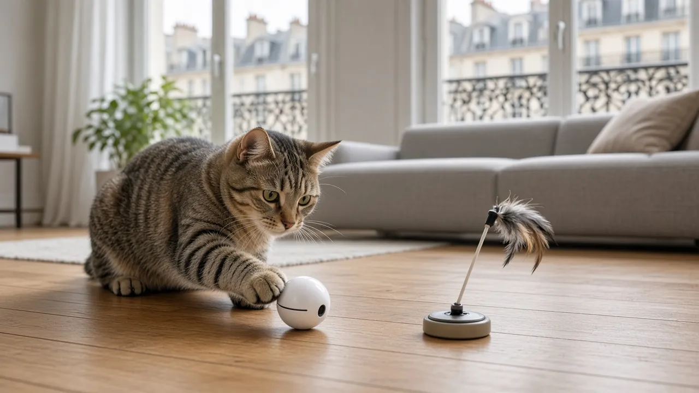
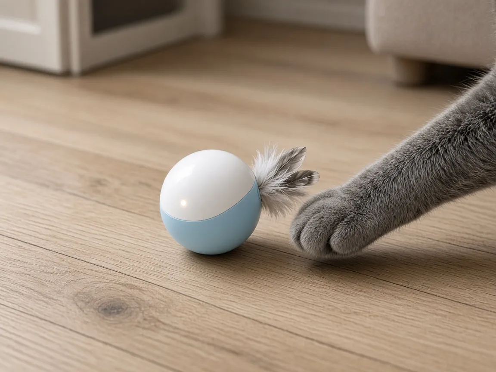
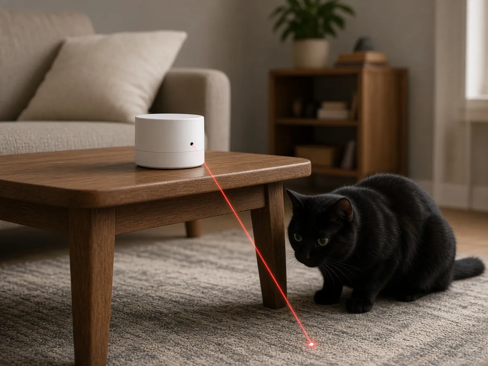
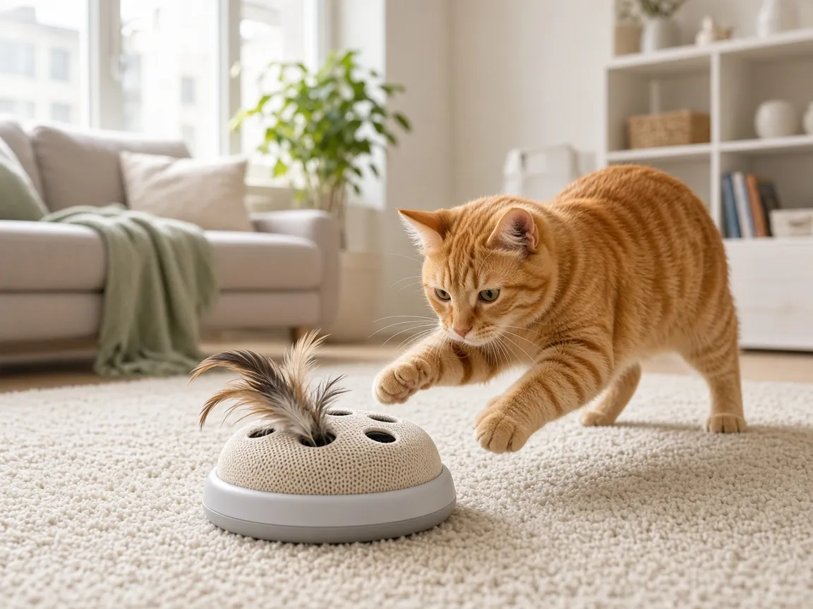

Jouet interactif automatique pour chat d’appartement : lequel choisir ?

Un chat d’intérieur s’ennuie vite quand tu pars travailler. Un jouet interactif automatique ne remplace pas une vraie séance de jeu avec toi, mais il peut lui offrir quelques moments de chasse dans la journée. Voici les trois familles de jouets qui marchent le mieux en appartement, avec ce qu’il faut vérifier avant d’acheter : bruit, autonomie, sécurité et facilité d’entretien.
Les 3 points à vérifier avant d’acheter
- Le bruit : en appartement, un moteur qui grince sur le parquet peut gêner les voisins du dessous. Privilégie les modèles annoncés « silencieux » et les coques en plastique souple.
- Le mode automatique : un bon jouet se met en veille tout seul après quelques minutes puis se réveille quand le chat le touche. Sans ça, la batterie se vide et le chat se lasse.
- La sécurité : pas de petites pièces qui se détachent facilement, une plume ou un embout remplaçable, et une recharge USB plutôt que des piles que le chat pourrait atteindre.
1. La balle roulante intelligente

Pour le chat qui aime courser
La balle se déplace seule, change de direction quand elle touche un meuble et s’arrête après une courte session. C’est le jouet le plus polyvalent pour un salon ou un couloir. Choisis un modèle rechargeable en USB, avec plusieurs vitesses et une mise en veille automatique. Évite-la si ton logement a beaucoup de tapis épais : elle y roule mal.
Voir sur Amazon – balles interactives2. Le laser automatique

Pour le chat très joueur, à petites doses
Posé sur un meuble, il projette un point lumineux qui bouge au sol selon un parcours aléatoire. Il occupe beaucoup d’espace sans rien encombrer, ce qui est pratique en studio. Attention : certains chats deviennent frustrés par une « proie » qu’ils n’attrapent jamais. Garde des séances courtes, avec minuterie, et termine toujours par un jouet qu’il peut vraiment attraper. Le faisceau ne doit jamais viser les yeux.
Voir sur Amazon – lasers automatiques3. La plume électronique (jouet cache-cache)

Pour le chat qui aime guetter
Une base ronde fait apparaître et disparaître une plume par des trous, ou fait tourner une tige sous un tissu. Ça imite une proie qui se cache, et beaucoup de chats adorent bondir dessus. C’est le jouet le plus stable : il ne roule pas sous le canapé. Vérifie que les plumes de rechange sont fournies, car elles s’abîment vite.
Voir sur Amazon – plumes électroniquesQuel jouet pour quel chat ?
| Profil | Jouet conseillé | Point d’attention |
|---|---|---|
| Jeune chat très actif | Balle roulante | Bruit sur parquet |
| Chat qui chasse les reflets | Laser automatique | Séances courtes, finir par une vraie proie |
| Chat plus calme ou âgé | Plume électronique | Plumes de rechange |
| Studio, peu de place | Laser ou plume | Placer hors des zones de passage |
Conseils pour que ton chat ne s’en lasse pas
- Ne laisse pas le jouet en accès libre toute la journée : sors-le, puis range-le. La nouveauté compte beaucoup pour un chat.
- Alterne deux ou trois jouets différents d’une semaine à l’autre.
- Associe le jeu à un repas : un distributeur de croquettes connecté juste après une session reproduit le cycle chasse puis repas.
- Si tu veux voir comment il joue en ton absence, une caméra à friandises permet aussi d’interagir à distance.
FAQ
Un jouet automatique suffit-il à occuper un chat seul toute la journée ?
Non. Il apporte quelques moments de stimulation, mais un chat d’appartement a aussi besoin d’un arbre à chat, de cachettes et de vraies séances de jeu avec toi. Vois notre checklist équipement chat d’appartement.
Les jouets laser sont-ils déconseillés ?
Ils ne sont pas à bannir, mais à utiliser avec modération : séances courtes, jamais dans les yeux, et toujours une proie attrapable à la fin pour éviter la frustration.
Rechargeable ou à piles ?
Rechargeable en USB, de préférence : pas de compartiment à piles que le chat pourrait ouvrir, et moins de déchets.
Mon chat a peur du jouet, que faire ?
Laisse-le d’abord éteint quelques jours pour qu’il le renifle, puis lance-le à vitesse lente, à distance. Si ton chat montre un stress inhabituel, parles-en à ton vétérinaire.
Notre avis
Pour la plupart des chats d’appartement, la balle roulante rechargeable avec mise en veille est le meilleur premier achat. Ajoute une plume électronique pour un chat plus posé, et garde le laser pour des séances courtes. Pour équiper le reste de l’appartement, vois notre Top 5 des équipements 2026.
Pas encore prêt à acheter ? Commencez par notre audit gratuit en 1 jour (PDF).
Liens affiliés Amazon — nous pouvons toucher une commission sans surcoût pour vous.